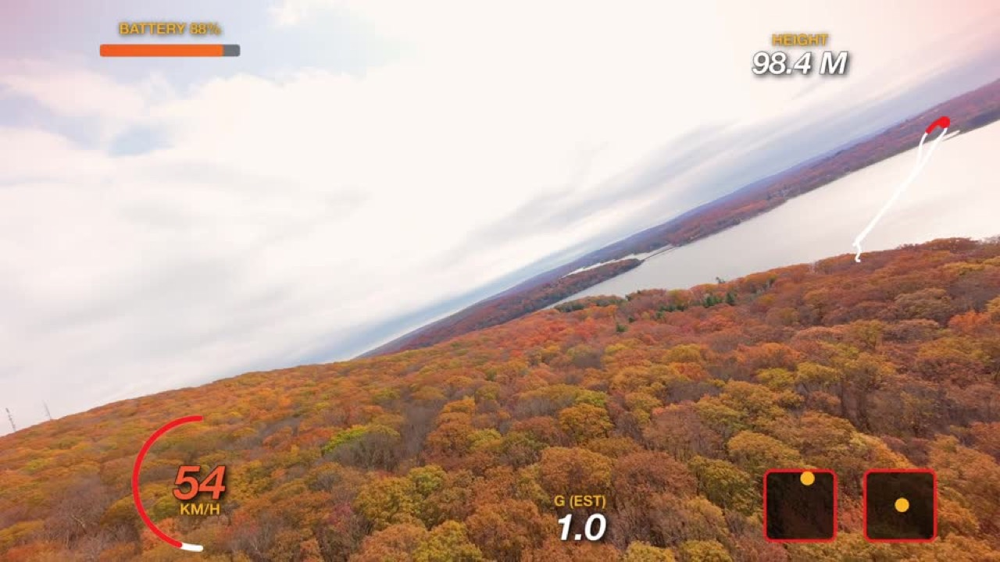

80-second walkthrough: install, the panel, the four designs, Avata 2 and GoPro. More video guides below.
Put your goggles' HUD back in the edit
SkyHUD reads the flight data already inside your GoPro and DJI Avata 2 videos and turns it into an animated HUD in DaVinci Resolve: speed, height, horizon, flips, g-force, flight path and sticks. Editable, on its own track, never burned in.
Free and open source · macOS and Windows · Resolve free and Studio · All downloads

Race: loud gauges for action edits.
Works with
- GoPro with GPS (tested on HERO10 Black)
- Gyroflow-stabilized GoPro clips
- DJI Avata 2
- Avata 2 flight logs for sticks and battery
- Betaflight blackbox: coming next
Three steps
- 1. InstallDownload the zip file, extract it, run the install script, then restart Resolve. On a Mac, the first time: System Settings › Privacy & Security, scroll down, Open Anyway.
- 2. Edit and gradeCut and grade your flight as usual. The HUD comes last, so the grade never touches it.
- 3. Add the HUDWorkspace › Scripts › SkyHUD, pick a design, press Add HUD to all shots.
Video guides
The phone, computer and DJI screens in these guides are simplified drawings; yours may look a little different. Step by step in text: flight logs, DJI key.
Early release, built in the open
Tested so far on Resolve Studio 21 on macOS; checks on Windows and free Resolve are in progress. Star the repo and watch its releases to hear about new designs and Betaflight support. Bugs and ideas are welcome.